JEE Main 2026 (Session 2), 5 Apr Shift 2: worked solutions for review
Questions and options are NTA’s own images; the green option is NTA’s final key. Every solution below was written by Claude
and checked against NTA’s final key. It is not NTA’s solution. Please mark anything unclear or wrong.
Q1 · Mathematics · MCQ · ID 691121451
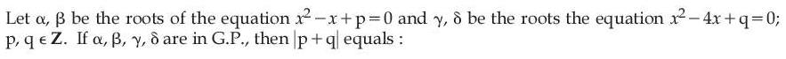
(1) 
(2) 
Hint 1: Write the four numbers as a, ar, ar², ar³. Then α + β and γ + δ are related by r².
Hint 2: a(1 + r) = 1 and ar²(1 + r) = 4, so r² = 4. Check r = 2 and r = −2: p = a²r and q = a²r⁵ must be integers.
What this tests: Roots in geometric progression.
1. r = 2: a = 1/3 and p = 2/9, not an integer.
2. r = −2: a = −1, p = (1)(−2) = −2, q = (1)(−32) = −32.
3. |p + q| = 34.
Answer: (3)
If this felt hard: Using the condition p, q ∈ ℤ to choose r is the key step. Revise 'Sequences and Series' and 'Quadratic Equations'.
Claude’s answer: 3 · NTA final key: 3 · agrees · Answer recomputed with SymPy (tools/verify_pyq_solutions.py)
Q2 · Mathematics · MCQ · ID 691121452
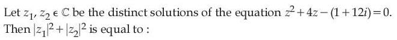
(1) 
(2) 
(4) 
Hint 1: Use the quadratic formula. You'll need √(5 + 12i).
Hint 2: √(5 + 12i) = 3 + 2i (check: (3 + 2i)² = 9 − 4 + 12i). So z = −2 ± (3 + 2i).
What this tests: Square roots of complex numbers.
1. z1 = 1 + 2i and z2 = −5 − 2i.
2. |z1|² + |z2|² = 5 + 29 = 34.
Answer: (4)
If this felt hard: Revise 'Complex Numbers': finding √(a + ib) by solving (x + iy)² = a + ib.
Claude’s answer: 4 · NTA final key: 4 · agrees · Answer recomputed with SymPy (tools/verify_pyq_solutions.py)
Q3 · Mathematics · MCQ · ID 691121453
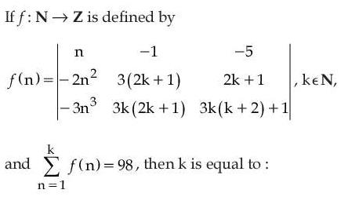
(1) 
(2) 
(3) 
(4) 
Hint 1: Only the first column depends on n. So the sum of the determinants is one determinant with Σn, Σn², Σn³ in the first column.
Hint 2: Column 1 becomes (k(k+1)/2, −2Σn², −3Σn³). Expand and simplify; it equals k(k+1)(2k+1)... Try small k.
What this tests: Summation of determinants (linearity in one column).
1. Σf(n) = det[[Σn, −1, −5], [−2Σn², 3(2k+1), 2k+1], [−3Σn³, 3k(2k+1), 3k(k+2)+1]].
2. Evaluating for k = 1, 2, 3: the value reaches 98 at k = 3.
Answer: (1)
If this felt hard: Revise 'Matrices and Determinants': a determinant is linear in each column.
Claude’s answer: 1 · NTA final key: 1 · agrees · Answer recomputed with SymPy (tools/verify_pyq_solutions.py)
Q4 · Mathematics · MCQ · ID 691121454
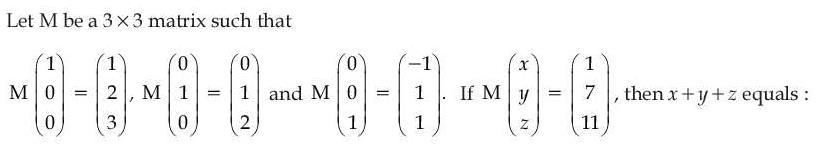
(2) 
(3) 
(4) 
Hint 1: Me1, Me2, Me3 are the columns of M.
Hint 2: M = [[1, 0, −1], [2, 1, 1], [3, 2, 1]]. Solve M(x, y, z) = (1, 7, 11).
What this tests: Matrix columns and solving linear systems.
1. x − z = 1, 2x + y + z = 7, 3x + 2y + z = 11.
2. Subtracting the second from the third: x + y = 4. With z = x − 1: 3x + y = 8. So x = 2, y = 2, z = 1.
3. x + y + z = 5.
Answer: (2)
If this felt hard: Revise 'Matrices'.
Claude’s answer: 2 · NTA final key: 2 · agrees · Answer recomputed with SymPy (tools/verify_pyq_solutions.py)
Q5 · Mathematics · MCQ · ID 691121455
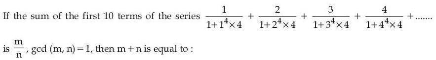
Hint 1: Factor 1 + 4n⁴ (Sophie Germain identity).
Hint 2: 4n⁴ + 1 = (2n² + 2n + 1)(2n² − 2n + 1). Then n/(1 + 4n⁴) = ¼[1/(2n² − 2n + 1) − 1/(2n² + 2n + 1)].
What this tests: Telescoping sums via factorisation.
1. The terms telescope: sum = ¼[1 − 1/(2 × 100 + 20 + 1)] = ¼ × 220/221 = 55/221.
2. m + n = 276.
Answer: (3)
If this felt hard: Revise 'Sequences and Series'. The factorisation a⁴ + 4b⁴ = (a² + 2b² + 2ab)(a² + 2b² − 2ab) is worth knowing.
Claude’s answer: 3 · NTA final key: 3 · agrees · Answer recomputed with SymPy (tools/verify_pyq_solutions.py)
Q6 · Mathematics · MCQ · ID 691121456
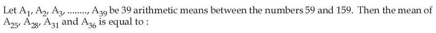
(1) 
Hint 1: 39 means between 59 and 159 make 41 terms. What is the common difference?
Hint 2: d = 100/40 = 2.5 and Ak = 59 + 2.5k.
What this tests: Arithmetic means.
1. Mean of A25, A28, A31, A36 = 59 + 2.5 × (25 + 28 + 31 + 36)/4 = 59 + 2.5 × 30 = 134.
Answer: (4)
If this felt hard: Revise 'Sequences and Series'.
Claude’s answer: 4 · NTA final key: 4 · agrees · Answer recomputed with SymPy (tools/verify_pyq_solutions.py)
Q7 · Mathematics · MCQ · ID 691121457
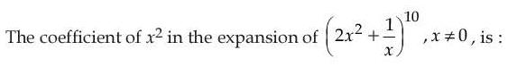
Hint 1: General term: C(10, r)(2x²)10−r(1/x)r. Find r for x².
Hint 2: Power of x = 20 − 3r = 2, so r = 6.
What this tests: General term of a binomial expansion.
1. Coefficient = C(10, 6) × 2⁴ = 210 × 16 = 3360.
Answer: (2)
If this felt hard: Revise 'Binomial Theorem'.
Claude’s answer: 2 · NTA final key: 2 · agrees · Answer recomputed with SymPy (tools/verify_pyq_solutions.py)
Q8 · Mathematics · MCQ · ID 691121458
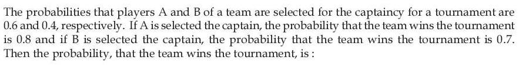
Hint 1: Use the total probability theorem.
Hint 2: P(win) = P(A)P(win | A) + P(B)P(win | B).
What this tests: Total probability.
1. 0.6 × 0.8 + 0.4 × 0.7 = 0.48 + 0.28 = 0.76.
Answer: (2)
If this felt hard: Revise 'Probability'.
Claude’s answer: 2 · NTA final key: 2 · agrees · Answer recomputed by script (tools/verify_pyq_solutions.py)
Q9 · Mathematics · MCQ · ID 691121459
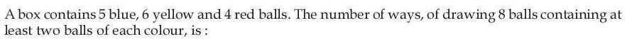
Hint 1: List the colour splits (b, y, r) with each at least 2 and total 8.
Hint 2: Splits: (2,2,4), (2,3,3), (2,4,2), (3,2,3), (3,3,2), (4,2,2). Multiply the choices for each.
What this tests: Selections with lower limits.
1. 150 + 800 + 900 + 600 + 1200 + 450 = 4100.
Answer: (1)
If this felt hard: Revise 'Permutations and Combinations'. Listing the splits systematically avoids misses.
Claude’s answer: 1 · NTA final key: 1 · agrees · Answer recomputed with SymPy (tools/verify_pyq_solutions.py)
Q10 · Mathematics · MCQ · ID 691121460
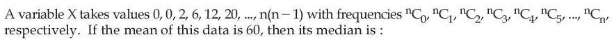
(3) 
Hint 1: The r-th value is r(r − 1) with frequency C(n, r). Use Σr(r − 1)C(n, r) = n(n − 1)2n−2.
Hint 2: Mean = n(n − 1)/4 = 60, so n = 16. The frequencies are symmetric, so the median is at the middle r.
What this tests: Mean and median with binomial-coefficient frequencies.
1. n(n − 1) = 240, so n = 16.
2. The median falls at r = 8, so the median value = 8 × 7 = 56.
Answer: (1)
If this felt hard: Revise 'Statistics' and 'Binomial Theorem' (sums like Σr(r − 1)C(n, r)).
Claude’s answer: 1 · NTA final key: 1 · agrees · Answer recomputed with SymPy (tools/verify_pyq_solutions.py)
Q11 · Mathematics · MCQ · ID 691121461
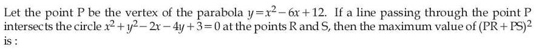
(1) 
(3) 
Hint 1: P is outside the circle. For a line through P, PR + PS = 2 × (distance from P to the chord's midpoint).
Hint 2: P = (3, 3), centre C = (1, 2). PR + PS = 2√(PC² − p²), where p is the distance from C to the line. Make p = 0.
What this tests: Secants from an external point.
1. PC² = 4 + 1 = 5.
2. Maximum PR + PS = 2√5 (the line through the centre).
3. (PR + PS)² = 20.
Answer: (2)
If this felt hard: Revise 'Conic Sections': circle.
Claude’s answer: 2 · NTA final key: 2 · agrees · Answer recomputed with SymPy (tools/verify_pyq_solutions.py)
Q12 · Mathematics · MCQ · ID 691121462
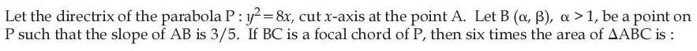
Hint 1: Directrix x = −2, so A = (−2, 0). Take B = (2t², 4t) and use the slope 3/5.
Hint 2: 4t/(2t² + 2) = 3/5 gives 3t² − 10t + 3 = 0. For a focal chord, the other end has parameter −1/t.
What this tests: Parabola parametric form; focal chords.
1. t = 3 (since α > 1): B = (18, 12). C has parameter −1/3: C = (2/9, −4/3).
2. Area of ABC = ½|(B − A) × (C − A)| = 80/3.
3. Six times the area = 160.
Answer: (2)
If this felt hard: Revise 'Conic Sections': for y² = 4ax, a focal chord has t1t2 = −1.
Claude’s answer: 2 · NTA final key: 2 · agrees · Answer recomputed with SymPy (tools/verify_pyq_solutions.py)
Q13 · Mathematics · MCQ · ID 691121463
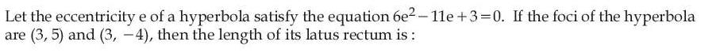
Hint 1: A hyperbola has e > 1. Solve the quadratic for e.
Hint 2: e = 3/2. The distance between the foci is 9 = 2ae.
What this tests: Hyperbola: eccentricity and latus rectum.
1. a = 3; b² = a²(e² − 1) = 9 × 5/4 = 45/4.
2. Latus rectum = 2b²/a = 15/2.
Answer: (3)
If this felt hard: Revise 'Conic Sections'.
Claude’s answer: 3 · NTA final key: 3 · agrees · Answer recomputed with SymPy (tools/verify_pyq_solutions.py)
Q14 · Mathematics · MCQ · ID 691121464
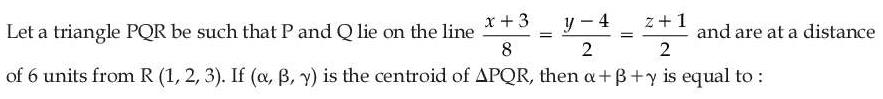
(1) 
(2) 
(3) 
(4) 
Hint 1: RP = RQ = 6, so the foot F of the perpendicular from R to the line is the midpoint of PQ.
Hint 2: Centroid = (P + Q + R)/3 = (2F + R)/3. Find F.
What this tests: Foot of a perpendicular; centroid.
1. With (−3 + 8t, 4 + 2t, −1 + 2t): (R − point)·(8, 2, 2) = 36 − 72t = 0, so t = 1/2 and F = (1, 5, 0).
2. Centroid = ((2, 10, 0) + (1, 2, 3))/3 = (1, 4, 1).
3. Sum = 6.
Answer: (3)
If this felt hard: Revise 'Three Dimensional Geometry'.
Claude’s answer: 3 · NTA final key: 3 · agrees · Answer recomputed with SymPy (tools/verify_pyq_solutions.py)
Q15 · Mathematics · MCQ · ID 691121465
(1) 
(2) 
(3) 
(4) 
Hint 1: Find the foot F of the perpendicular from (1, 2, 7) to the line; the image is 2F − P.
Hint 2: Point on the line (t, 1 + t, 2 + 2t). Perpendicular condition gives t = 2.
What this tests: Image of a point in a line.
1. F = (2, 3, 6), image = (3, 4, 5).
2. (a − 3)² + 4 = 16, so a = 3 ± 2√3.
3. Sum = 6.
Answer: (3)
If this felt hard: Revise 'Three Dimensional Geometry'.
Claude’s answer: 3 · NTA final key: 3 · agrees · Answer recomputed with SymPy (tools/verify_pyq_solutions.py)
Q16 · Mathematics · MCQ · ID 691121466
(1)
(2)
(3)
(4)
Hint 1: Write the position vectors of R and M in terms of a and b.
Hint 2: R = a/5. RM = b/5, so M = (a + b)/5.
What this tests: Position vectors.
1. PM = M − a = (b − 4a)/5.
Answer: (2)
If this felt hard: Revise 'Vector Algebra'.
Claude’s answer: 2 · NTA final key: 2 · agrees · Theory question: not computable, needs a teacher’s review
Q17 · Mathematics · MCQ · ID 691121467
(1) 
(2) 
(3)
(4) 
Hint 1: Use 1 − cos u ≈ u²/2 and tan u ≈ u as y → 0.
Hint 2: f(x) = (x²y²/2)(xy)/y³ = x³/2. Now count solutions of x³/2 = sin x.
What this tests: Standard limits; counting roots graphically.
1. x = 0 is a solution.
2. Near 0, sin x > x³/2; at x = 1.5, x³/2 > sin x: one positive root. By symmetry, one negative root.
3. For |x| ≥ 2, |x³/2| > 1, so there are no more.
4. Total 3.
Answer: (3)
If this felt hard: Revise 'Limits' and sketching y = sin x against y = x³/2.
Claude’s answer: 3 · NTA final key: 3 · agrees · Answer recomputed with SymPy (tools/verify_pyq_solutions.py)
Q18 · Mathematics · MCQ · ID 691121468
(1)
(2)
(3)
(4)
Hint 1: f(a) is the average of the two outer terms. Use AM ≥ GM on each.
Hint 2: 21−a + 21+a ≥ 4 and 3a + 3−a ≥ 2, both at a = 0. So α = 3. For the integral, put u = e2x.
What this tests: AM–GM and integration by substitution.
1. α = (4 + 2)/2 = 3.
2. ∫dx/(e2x − e−2x) = ½∫du/(u² − 1) = ¼ ln((u − 1)/(u + 1)).
3. u from 4 to 9: ¼[ln(8/10) − ln(3/5)] = ¼ ln(4/3).
Answer: (2)
If this felt hard: Revise 'Integrals' (∫du/(u² − 1)) and AM–GM.
Claude’s answer: 2 · NTA final key: 2 · agrees · Answer recomputed with SymPy (tools/verify_pyq_solutions.py)
Q19 · Mathematics · MCQ · ID 691121469
(1)
(2)
(3)
(4)
Hint 1: Put x = 1 to get f(1). Then differentiate to get a differential equation.
Hint 2: f(1) = e. Differentiating: f′ = f − ln x + 1/x, i.e. (f e−x)′ = e−x(1/x − ln x) = (e−x ln x)′.
What this tests: Integral equations and linear differential equations.
1. f e−x = e−x ln x + C, so f = ln x + Cex. f(1) = e gives C = 1.
2. f(x) = ln x + ex.
3. f(f(1)) = f(e) = 1 + ee.
Answer: (1)
If this felt hard: Revise 'Differential Equations' and the Leibniz rule.
Claude’s answer: 1 · NTA final key: 1 · agrees · Answer recomputed with SymPy (tools/verify_pyq_solutions.py)
Q20 · Mathematics · MCQ · ID 691121470
(1) 
(2)
(3)
(4)
Hint 1: f″ = g″ means f′ − g′ is constant, and f − g is linear.
Hint 2: f′ − g′ = 4 − 2 = 2, so f − g = 2x + c. Use f(2) = 3 and g(2) = 9.
What this tests: Integrating derivative conditions.
1. 3 − 9 = 4 + c, so c = −10.
2. f(25) − g(25) = 50 − 10 = 40.
Answer: (2)
If this felt hard: Revise 'Integrals' (antiderivatives).
Claude’s answer: 2 · NTA final key: 2 · agrees · Answer recomputed with SymPy (tools/verify_pyq_solutions.py)
Q21 · Mathematics · Numerical · ID 691121471
Hint 1: Write s = a1 + b2 and t = a2 + b1. Both are sums a + b with a in A and b in B. You need s to divide t.
Hint 2: The 9 possible sums a + b are 3, 4, 6, 7, 9, 9, 10, 12, 15 (9 appears twice: 1 + 8 and 7 + 2). Count ordered pairs (s, t) of these 9 sums with s | t.
What this tests: Counting elements of a relation.
1. s = 3 divides 3, 6, 9, 9, 12, 15: 6 pairs.
2. s = 4 divides 4, 12: 2. s = 6 divides 6, 12: 2. s = 7: 1. s = 10: 1. s = 12: 1. s = 15: 1.
3. Each of the two 9s divides both 9s: 4.
4. Total = 6 + 2 + 2 + 1 + 1 + 1 + 1 + 4 = 18.
Answer: 18
If this felt hard: Making the list of sums first turns this into a quick count. Revise 'Relations and Functions'.
Claude’s answer: 18 · NTA final key: 18 · agrees · Answer recomputed with SymPy (tools/verify_pyq_solutions.py)
Q22 · Mathematics · Numerical · ID 691121472
Hint 1: Lines through (−1, −1) at 45° to x + y = 0 are x = −1 and y = −1.
Hint 2: A reflected ray appears to come from the image of (−1, −1) in the mirror, which is (3/5, 11/5). Find where each ray hits the mirror.
What this tests: Reflection of rays in a line mirror.
1. x = −1 hits x + 2y = 1 at (−1, 1); y = −1 hits it at (3, −1).
2. Through (3/5, 11/5): from (−1, 1) the line is −3x + 4y = 7; from (3, −1) it is 4x + 3y = 9.
3. a = 4, b = 3, c = −3, d = 4: ad + bc = 16 − 9 = 7.
Answer: 7
If this felt hard: Revise 'Straight Lines': image of a point in a line.
Claude’s answer: 7 · NTA final key: 7 · agrees · Answer recomputed with SymPy (tools/verify_pyq_solutions.py)
Q23 · Mathematics · Numerical · ID 691121473
Hint 1: Use product-to-sum on both sides.
Hint 2: Both sides contain ½cos(7θ/2), which cancels. You get cos(3θ/2) = cos(21θ/2).
What this tests: Trigonometric equations and counting solutions.
1. 21θ/2 = 2nπ ± 3θ/2 gives θ = 2nπ/9 or θ = nπ/6.
2. In [−π, π]: 9 values of 2nπ/9 and 13 values of nπ/6.
3. Common values: 0, ±2π/3 (3 of them).
4. n(S) = 9 + 13 − 3 = 19.
Answer: 19
If this felt hard: Don't forget to remove the solutions counted twice. Revise 'Trigonometric Functions'.
Claude’s answer: 19 · NTA final key: 19 · agrees · Answer recomputed with SymPy (tools/verify_pyq_solutions.py)
Q24 · Mathematics · Numerical · ID 691121474
Hint 1: Replace x by π/2 − x to get a second equation, then solve for f(x).
Hint 2: f(x) = (3cos x − sin x)/8, so α = √10/8 and α² = 5/32. The curves x² and βx³ meet at x = 0 and x = 1/β.
What this tests: Functional equations; area between curves.
1. Area = ∫ from 0 to 1/β of (x² − βx³) dx = 1/(12β³).
2. 1/(12β³) = 5/32, so β³ = 8/15.
3. 30β³ = 16.
Answer: 16
If this felt hard: Revise 'Application of Integrals' and a cos x + b sin x (max √(a² + b²)).
Claude’s answer: 16 · NTA final key: 16 · agrees · Answer recomputed with SymPy (tools/verify_pyq_solutions.py)
Q25 · Mathematics · Numerical · ID 691121475
Hint 1: Divide by √tan x: it's a linear equation dy/dx + (tan x)y = sec³x/√tan x.
Hint 2: Integrating factor = sec x. Then ∫sec⁴x/√tan x dx with t = tan x becomes ∫(1 + t²)/√t dt.
What this tests: Linear differential equations.
1. y sec x = 2√t + (2/5)t5/2 + C. At π/4: (6√2/5)√2 = 12/5 = 2 + 2/5 + C, so C = 0.
2. At π/3 (t = √3, sec = 2): 2y = 31/4(2 + 6/5), so y = (8/5)31/4 = (4/5)α.
3. α = 2 × 31/4, α⁴ = 48.
Answer: 48
If this felt hard: Revise 'Differential Equations'.
Claude’s answer: 48 · NTA final key: 48 · agrees · Answer recomputed with SymPy (tools/verify_pyq_solutions.py)
Q26 · Physics · MCQ · ID 691121476
(1) 
(2)
(3)
(4)
Hint 1: Planck units: combine h, G and c to get length, time and mass.
Hint 2: Length √(Gh/c³), time √(Gh/c⁵), mass √(hc/G). The remaining expression is the temperature.
What this tests: Dimensional analysis (Planck units).
1. A-IV, B-II, C-I, D-III.
Answer: (2)
If this felt hard: Revise 'Units and Measurements'. Check dimensions to confirm: Gh/c⁵ has dimension T².
Claude’s answer: 2 · NTA final key: 2 · agrees · Theory question: not computable, needs a teacher’s review
Q27 · Physics · MCQ · ID 691121477
(1)
(2) 
(3)
(4)
Hint 1: R = V/I. Fractional errors add for a quotient.
Hint 2: ΔR/R = ΔV/V + ΔI/I = 0.5/10 + 0.2/5.
What this tests: Error propagation.
1. R = 2 Ω; ΔR/R = 0.05 + 0.04 = 0.09.
2. ΔR = 0.18 Ω.
Answer: (4)
If this felt hard: Revise 'Units and Measurements'.
Claude’s answer: 4 · NTA final key: 4 · agrees · Answer recomputed by script (tools/verify_pyq_solutions.py)
Q28 · Physics · MCQ · ID 691121478
(1) 
(2) 
(3)
(4)
Hint 1: The block stays at rest on the incline, so static friction = mg sin 30°, along the incline (upwards).
Hint 2: The assembly moves vertically up 8 m in 2 s. Work = force × displacement × cos(angle between them).
What this tests: Work done by static friction.
1. Friction = 1 × 10 × ½ = 5 N, at 30° to the horizontal, i.e. 60° to the vertical.
2. W = 5 × 8 × cos 60° = 20 J.
Answer: (1)
If this felt hard: Static friction can do work when the surface itself moves. Revise 'Work, Energy and Power'.
Claude’s answer: 1 · NTA final key: 1 · agrees · Answer recomputed by script (tools/verify_pyq_solutions.py)
Q29 · Physics · MCQ · ID 691121479
(1)
(2)
(3)
(4)
Hint 1: Distance = total area between the graph and the time axis. Displacement = signed area.
Hint 2: Two triangles: one above (0–20 s, height 5) and one below (20–40 s, depth 5).
What this tests: Reading v–t graphs.
1. Each triangle has area ½ × 20 × 5 = 50 m.
2. Distance = 100 m; displacement = 0, so the average velocity is zero.
Answer: (3)
If this felt hard: Revise 'Motion in a Straight Line'.
Claude’s answer: 3 · NTA final key: 3 · agrees · Answer recomputed by script (tools/verify_pyq_solutions.py)
Q30 · Physics · MCQ · ID 691121480
(1) 
(2) 
(3) 
(4)
Hint 1: From rest with constant angular acceleration: θ ∝ t².
Hint 2: θ in 2 s ∝ 4; θ in 4 s ∝ 16.
What this tests: Rotational kinematics.
1. θ2 = 16 − 4 = 12 (units), θ1 = 4.
2. θ2/θ1 = 3.
Answer: (2)
If this felt hard: Revise 'System of Particles and Rotational Motion'.
Claude’s answer: 2 · NTA final key: 2 · agrees · Answer recomputed by script (tools/verify_pyq_solutions.py)
Q31 · Physics · MCQ · ID 691121481
(1)
(2)
(3)
(4)
Hint 1: Rolling: total KE = ½mv²(1 + k²/R²). This all becomes mgh.
Hint 2: h = v0²(1 + k²/R²)/(2g) = 7v0²/(10g).
What this tests: Rolling motion energy.
1. 1 + k²/R² = 7/5, so k²/R² = 2/5.
2. That is a solid sphere.
Answer: (4)
If this felt hard: Revise 'System of Particles and Rotational Motion': k²/R² values (ring 1, disc/cylinder ½, solid sphere 2/5).
Claude’s answer: 4 · NTA final key: 4 · agrees · Answer recomputed by script (tools/verify_pyq_solutions.py)
Q32 · Physics · MCQ · ID 691121482
(1)
(2)
(3)
(4)
Hint 1: Use U = −GMm/r, not mgh (the height is large).
Hint 2: ΔU = GMm(1/R − 1/(3R)) and GM = gR².
What this tests: Gravitational potential energy at large heights.
1. ΔU = (2/3)mgR.
Answer: (4)
If this felt hard: The trap 2mgR comes from using mgh. Revise 'Gravitation'.
Claude’s answer: 4 · NTA final key: 4 · agrees · Answer recomputed by script (tools/verify_pyq_solutions.py)
Q33 · Physics · MCQ · ID 691121483
(1)
(2)
(3)
(4)
Hint 1: Volume is conserved: 8 small drops make one drop of radius 2r.
Hint 2: Area before: 8 × 4πr². Area after: 4π(2r)².
What this tests: Surface energy when drops merge.
1. Area decrease = 32πr² − 16πr² = 16πr².
2. Energy released = 16πr²S.
Answer: (2)
If this felt hard: Revise 'Mechanical Properties of Fluids'.
Claude’s answer: 2 · NTA final key: 2 · agrees · Answer recomputed by script (tools/verify_pyq_solutions.py)
Q34 · Physics · MCQ · ID 691121484
(1)
(2)
(3)
(4)
Hint 1: Combine PT³ = constant with PV = nRT.
Hint 2: P ∝ T/V, so (T/V)T³ = constant, i.e. V ∝ T⁴.
What this tests: Thermal expansion of an ideal gas in a process.
1. Coefficient of volume expansion = (1/V)(dV/dT) = 4/T.
Answer: (3)
If this felt hard: Revise 'Thermodynamics' and 'Thermal Properties of Matter'.
Claude’s answer: 3 · NTA final key: 3 · agrees · Answer recomputed by script (tools/verify_pyq_solutions.py)
Q35 · Physics · MCQ · ID 691121485
(1)
(2)
(3) 
(4) 
Hint 1: Rewrite each function using identities. SHM means a single sine/cosine (possibly with a constant shift).
Hint 2: sin²ωt = (1 − cos 2ωt)/2. sin ωt + cos πωt mixes frequencies ω and πω (ratio irrational).
What this tests: Periodic motion vs SHM.
1. A: SHM about ½ with period π/ω (III).
2. B: sin³(2ωt) has period π/ω but is not SHM (I).
3. C: not periodic (IV).
4. D: period 2π/ω, not SHM (II).
Answer: (1)
If this felt hard: Revise 'Oscillations'.
Claude’s answer: 1 · NTA final key: 1 · agrees · Theory question: not computable, needs a teacher’s review
Q36 · Physics · MCQ · ID 691121486
(1)
(2)
(3)
(4)
Hint 1: A small piece dr at distance r moves with speed ωr. emf = ∫B(r)(ωr) dr.
Hint 2: emf = B0ω∫ from 0 to L of r e−λr dr. Use integration by parts.
What this tests: Motional emf in a non-uniform field.
1. ∫ r e−λr dr from 0 to L = 1/λ² − e−λL(L/λ + 1/λ²).
2. emf = B0ω[1/λ² − e−λL(1/λ² + L/λ)].
Answer: (1)
If this felt hard: Revise 'Electromagnetic Induction' and integration by parts.
Claude’s answer: 1 · NTA final key: 1 · agrees · Answer recomputed with SymPy (tools/verify_pyq_solutions.py)
Q37 · Physics · MCQ · ID 691121487
(1) 
(2)
(3) 
(4) 
Hint 1: In steady state, no current flows through the capacitor's branch.
Hint 2: Current flows in the loop with the 2 V cell, 6 Ω and 2 Ω. The capacitor branch sits across the 2 Ω resistor.
What this tests: Capacitors in DC circuits at steady state.
1. I = 2/(6 + 2) = 0.25 A.
2. Voltage across 2 Ω = 0.5 V. The 4 Ω in the capacitor branch carries no current, so VC = 0.5 V.
Answer: (1)
If this felt hard: Revise 'Current Electricity' and 'Capacitance'.
Claude’s answer: 1 · NTA final key: 1 · agrees · Answer recomputed by script (tools/verify_pyq_solutions.py)
Q38 · Physics · MCQ · ID 691121488
(1)
(2)
(3)
(4)
Hint 1: Does the magnetic force do any work?
Hint 2: No: only the electric force does work. W = ∫qE dx from 0 to L.
What this tests: Work–energy theorem with electric and magnetic fields.
1. W = qE0∫ from 0 to L of e−λx dx = (qE0/λ)(1 − e−λL).
Answer: (1)
If this felt hard: Revise 'Moving Charges and Magnetism'. Magnetic forces never change kinetic energy.
Claude’s answer: 1 · NTA final key: 1 · agrees · Answer recomputed with SymPy (tools/verify_pyq_solutions.py)
Q39 · Physics · MCQ · ID 691121489
(1)
(2)
(3)
(4)
Hint 1: EM waves carry momentum. Does that need mass?
Hint 2: Radiation pressure comes from momentum p = U/c, not from mass.
What this tests: Momentum of electromagnetic waves.
1. A true; R true (no rest mass).
2. R doesn't explain A: the pressure is due to momentum.
Answer: (2)
If this felt hard: Revise 'Electromagnetic Waves'.
Claude’s answer: 2 · NTA final key: 2 · agrees · Theory question: not computable, needs a teacher’s review
Q40 · Physics · MCQ · ID 691121490
(1)
(2)
(3)
(4)
Hint 1: For lenses in contact: P = Pconvex + Pconcave = 1/f1 − 1/|f2|.
Hint 2: The combination is concave if the concave lens is stronger, i.e. if |fconcave| < |fconvex|.
What this tests: Combination of thin lenses.
1. Behaves as concave if |fconvex| > |fconcave|.
2. Swapping thin lenses in contact changes nothing.
Answer: (1)
If this felt hard: Revise 'Ray Optics'. Think in powers (dioptres): they simply add.
Claude’s answer: 1 · NTA final key: 1 · agrees · Theory question: not computable, needs a teacher’s review
Q41 · Physics · MCQ · ID 691121491
(1)
(2)
(3)
(4)
Hint 1: Find P's image first. It becomes the object for Q.
Hint 2: P: u = −15, f = 10 gives v = +30, which is 15 cm beyond Q (a virtual object for Q).
What this tests: Two-lens systems.
1. Q: 1/v = 1/15 + 1/15, so v = 7.5 cm (real, to the right of Q).
2. Magnifications: −2 × 0.5 = −1, so the image is the same size.
Answer: (2)
If this felt hard: Revise 'Ray Optics'. A virtual object has positive u in the sign convention.
Claude’s answer: 2 · NTA final key: 2 · agrees · Answer recomputed by script (tools/verify_pyq_solutions.py)
Q42 · Physics · MCQ · ID 691121492
(1)
(2)
(3)
(4)
Hint 1: Opposite a slit, y = d/2. Path difference = yd/D.
Hint 2: Path difference = (d/2)(d)/(10d) = d/20 = λ/4. Phase = π/2.
What this tests: Intensity in YDSE at a given point.
1. I = I0cos²(φ/2) = I0cos²(π/4) = I0/2.
Answer: (2)
If this felt hard: Revise 'Wave Optics'.
Claude’s answer: 2 · NTA final key: 2 · agrees · Answer recomputed by script (tools/verify_pyq_solutions.py)
Q43 · Physics · MCQ · ID 691121493
(1)
(2)
(3)
(4)
Hint 1: λ = h/(mv). How does λ change if v falls by 20%?
Hint 2: v becomes 0.8v.
What this tests: de Broglie wavelength.
1. λ = λ0/0.8 = 1.25λ0.
Answer: (3)
If this felt hard: Revise 'Dual Nature of Matter and Radiation'.
Claude’s answer: 3 · NTA final key: 3 · agrees · Answer recomputed by script (tools/verify_pyq_solutions.py)
Q44 · Physics · MCQ · ID 691121494
(1)
(2)
(3)
(4)
Hint 1: Mass defect = 6mp + 6mn − mass of the nucleus.
Hint 2: Δm = 6(1.00727) + 6(1.00866) − 12.
What this tests: Mass defect.
1. Δm = 0.09558 u.
2. × 931.5 = 89.03 MeV/c².
Answer: (2)
If this felt hard: Revise 'Nuclei'.
Claude’s answer: 2 · NTA final key: 2 · agrees · Answer recomputed by script (tools/verify_pyq_solutions.py)
Note: The question uses the atomic mass 12 u with proton (not hydrogen-atom) masses; the options follow that.
Q45 · Physics · MCQ · ID 691121495
(1)
(2)
(3)
(4)
Hint 1: Charge balance: NAxp = NDxn. Which side has fewer dopant atoms?
Hint 2: The p-side is doped less (1015 vs 1018), so the depletion region goes deeper into it.
What this tests: Depletion region in an asymmetric p-n junction.
1. The depletion width is more on the p-side.
Answer: (2)
If this felt hard: Revise 'Semiconductor Electronics'.
Claude’s answer: 2 · NTA final key: 2 · agrees · Theory question: not computable, needs a teacher’s review
Q46 · Physics · Numerical · ID 691121496
Hint 1: Energy stored = ½ × stress × strain × volume = ½Y(strain)² × volume.
Hint 2: Strain = 3 mm/3 m = 10−3.
What this tests: Elastic potential energy.
1. U = ½ × 1.1×1011 × 10−6 × 6×10−4 = 33 J.
Answer: 33
If this felt hard: Revise 'Mechanical Properties of Solids'.
Claude’s answer: 33 · NTA final key: 33 · agrees · Answer recomputed by script (tools/verify_pyq_solutions.py)
Q47 · Physics · Numerical · ID 691121497
Hint 1: Heat released by x g cooling from 50 °C to 0 °C must heat (1000 − x) g to 100 °C and then boil it.
Hint 2: x × 4.2 × 50 = (1000 − x)(4.2 × 50 + 2256) J (per gram, in J).
What this tests: Calorimetry with a phase change.
1. 210x = 2466(1000 − x), so x = 2,466,000/2676 ≈ 921.5.
2. x ≈ 922.
Answer: 922
If this felt hard: Remember to include heating to 100 °C before evaporation. Revise 'Thermal Properties of Matter'.
Claude’s answer: 922 · NTA final key: 922 · agrees · Answer recomputed by script (tools/verify_pyq_solutions.py)
Note: NTA's answer 922 takes the evaporating water to be heated to 100 °C first.
Q48 · Physics · Numerical · ID 691121498
Hint 1: At resonance ω = 1/√(LC). Then XL = ωL.
Hint 2: ω = 1/√(1.6 × 40×10−6) = 125 rad/s.
What this tests: LCR resonance.
1. XL = 125 × 1.6 = 200 Ω.
Answer: 200
If this felt hard: Revise 'Alternating Current'.
Claude’s answer: 200 · NTA final key: 200 · agrees · Answer recomputed by script (tools/verify_pyq_solutions.py)
Q49 · Physics · Numerical · ID 691121499
Hint 1: The EMF is the same in both cases: E = I(R + r).
Hint 2: 0.25(5 + r) = 0.5(2 + r).
What this tests: Internal resistance of a cell.
1. 1.25 + 0.25r = 1 + 0.5r, so r = 1 Ω.
Answer: 1
If this felt hard: Revise 'Current Electricity'.
Claude’s answer: 1 · NTA final key: 1 · agrees · Answer recomputed by script (tools/verify_pyq_solutions.py)
Q50 · Physics · Numerical · ID 691121500
Hint 1: emf = A × dB/dt (the loop is perpendicular to B).
Hint 2: dB/dt = 4t + 2 = 14 T/s at t = 3 s. A = π(0.2)².
What this tests: Faraday's law.
1. emf = (22/7)(0.04)(14) = 1.76 V.
2. I = 1.76/2 = 0.88 A = 44/50 A.
Answer: 44
If this felt hard: Revise 'Electromagnetic Induction'.
Claude’s answer: 44 · NTA final key: 44 · agrees · Answer recomputed by script (tools/verify_pyq_solutions.py)
Q51 · Chemistry · MCQ · ID 691121501
(1)
(2)
(3)
(4)
Hint 1: Find moles of H2SO4 and of Zn. Which is limiting?
Hint 2: H2SO4: 50 × 1.3 × 0.5 = 32.5 g = 0.332 mol. Zn: 20/65 = 0.308 mol.
What this tests: Limiting reagent.
1. Zn is limiting: 0.308 mol H2.
2. Volume = 0.308 × 22.4 ≈ 6.892 L.
Answer: (3)
If this felt hard: Revise 'Some Basic Concepts of Chemistry'.
Claude’s answer: 3 · NTA final key: 3 · agrees · Answer recomputed by script (tools/verify_pyq_solutions.py)
Q52 · Chemistry · MCQ · ID 691121502
(1)
(2)
(3)
(4)
Hint 1: Check each statement. For D, radial nodes = n − l − 1.
Hint 2: 5f: 1, 6s: 5, 4d: 1, 5p: 3, 5d: 2.
What this tests: Orbital energies and nodes.
1. A true. C true.
2. B false: orbital energies decrease with increasing atomic number.
3. D false: 5d has 2 radial nodes.
Answer: (2), A and C
If this felt hard: Revise 'Structure of Atom'.
Claude’s answer: 2 · NTA final key: 2 · agrees · Theory question: not computable, needs a teacher’s review
Q53 · Chemistry · MCQ · ID 691121503
(1)
(2)
(3)
(4)
Hint 1: Bond length = distance between the two nuclei. The whole molecule extends one atomic radius beyond each nucleus.
Hint 2: Bond length = rA + rB. Total length = rA + (rA + rB) + rB.
What this tests: Covalent radius and bond length.
1. Bond length rA + rB; total length 2(rA + rB).
Answer: (1)
If this felt hard: Revise 'Classification of Elements' (covalent radius).
Claude’s answer: 1 · NTA final key: 1 · agrees · Theory question: not computable, needs a teacher’s review
Q54 · Chemistry · MCQ · ID 691121504
(1)
(2)
(3)
(4)
Hint 1: ΔH and ΔS from products minus reactants. Then ΔG = ΔH − TΔS.
Hint 2: ΔH = 2(42) − 8 − 80 = −4 kJ. ΔS = 2(200) − 140 − 250 = 10 J/K.
What this tests: Gibbs energy from ΔH and ΔS.
1. ΔG = −4 − 600 × 0.010 = −10 kJ/mol.
Answer: (2)
If this felt hard: Watch units: J vs kJ. Revise 'Thermodynamics'.
Claude’s answer: 2 · NTA final key: 2 · agrees · Answer recomputed by script (tools/verify_pyq_solutions.py)
Q55 · Chemistry · MCQ · ID 691121505
(1)
(2)
(3)
(4)
Hint 1: Molar heat capacities at 298 K: Cu(s) ≈ 24.4, Br2(l) ≈ 75.7, He(g) ≈ 20.8 J/(mol K).
Hint 2: Liquids with many internal motions have high C; a monatomic gas has the lowest.
What this tests: Molar heat capacities.
1. Br2(l) > Cu(s) > He(g).
Answer: (2)
If this felt hard: Revise 'Thermodynamics'.
Claude’s answer: 2 · NTA final key: 2 · agrees · Theory question: not computable, needs a teacher’s review
Q56 · Chemistry · MCQ · ID 691121506
(1)
(2)
(3)
(4)
Hint 1: Make a table: at equilibrium A = a − x, B = x, C = x; total moles = a + x.
Hint 2: Partial pressure = (moles/total) × p.
What this tests: Kp from degree of dissociation.
1. Kp = [x/(a + x)]²p²/[(a − x)p/(a + x)] = x²p/(a² − x²).
Answer: (2)
If this felt hard: Revise 'Equilibrium'.
Claude’s answer: 2 · NTA final key: 2 · agrees · Answer recomputed with SymPy (tools/verify_pyq_solutions.py)
Q57 · Chemistry · MCQ · ID 691121507
(1)
(2)
(3)
(4)
Hint 1: E°cell = 0.80 − (−0.76) = 1.56 V. Write the Nernst equation for Zn + 2Ag⁺ → Zn²⁺ + 2Ag.
Hint 2: E = 1.56 − (0.059/2) log(1/x²) = 1.56 + 0.059 log x.
What this tests: Nernst equation.
1. 1.60 = 1.56 + 0.059 log x, so log x = 0.04/0.059 = 4/5.9.
Answer: (2)
If this felt hard: Revise 'Electrochemistry'.
Claude’s answer: 2 · NTA final key: 2 · agrees · Answer recomputed by script (tools/verify_pyq_solutions.py)
Q58 · Chemistry · MCQ · ID 691121508
(1) 
(2) 
(3) 
(4) 
Hint 1: Classify each oxide: acidic, basic, amphoteric or neutral.
Hint 2: Al2O3, Cr2O3: amphoteric. Cl2O7, Mn2O7: acidic. Na2O, V2O3: basic. CO, N2O: neutral.
What this tests: Nature of oxides.
1. All 4 pairs match, so Statement I is true.
2. Na2O is the most basic and Cl2O7 the most acidic: true.
Answer: (1)
If this felt hard: Revise 'p-Block' and 'd-Block' oxides. Lower oxidation states of V are basic.
Claude’s answer: 1 · NTA final key: 1 · agrees · Theory question: not computable, needs a teacher’s review
Q59 · Chemistry · MCQ · ID 691121509
(1) 
(2) 
(3) 
(4) 
Hint 1: What does NCERT give as the product of Al with NaOH?
Hint 2: 2Al + 2NaOH + 6H2O → 2Na⁺[Al(OH)4]⁻ + 3H2.
What this tests: Amphoteric aluminium; VSEPR shapes.
1. Statement I false ([Al(OH)4]⁻, not [Al(OH)6]³⁻).
2. Statement II true: ICl4⁻ square planar, ClO3⁻ pyramidal, IBr2⁻ linear.
Answer: (4)
If this felt hard: Revise 'p-Block Elements' and 'Chemical Bonding'.
Claude’s answer: 4 · NTA final key: 4 · agrees · Theory question: not computable, needs a teacher’s review
Q60 · Chemistry · MCQ · ID 691121510
(1)
(2) 
(3) 
(4) 
Hint 1: More unpaired d electrons means stronger metallic bonding. Which splitting pattern is octahedral and which tetrahedral?
Hint 2: Octahedral: t2g below eg. Tetrahedral ([NiCl4]²⁻): e below t2.
What this tests: Enthalpy of atomisation; crystal field splitting.
1. Both statements are correct.
Answer: (1)
If this felt hard: Revise 'd- and f-Block Elements' and 'Coordination Compounds'.
Claude’s answer: 1 · NTA final key: 1 · agrees · Theory question: not computable, needs a teacher’s review
Q61 · Chemistry · MCQ · ID 691121511
(1)
(2) 
(3) 
(4) 
Hint 1: Chelating ligands make complexes more stable. Which ligands are ambidentate?
Hint 2: Oxalate and en are chelating. NO2⁻ and SCN⁻ are ambidentate.
What this tests: Stability, hybridisation and isomerism of complexes.
1. A true (oxalate chelate). C true (Fe²⁺ low spin, d²sp³). D true (NO2⁻ is ambidentate).
2. B false (en complex is more stable). E false.
Answer: (3), A, C and D
If this felt hard: Revise 'Coordination Compounds'.
Claude’s answer: 3 · NTA final key: 3 · agrees · Theory question: not computable, needs a teacher’s review
Q62 · Chemistry · MCQ · ID 691121512
(1)
(2)
(3)
(4) 
Hint 1: Match each method with the situation where it is used.
Hint 2: Simple: large bp difference. Fractional: close bps. Steam: steam-volatile. Reduced pressure: decomposes at its bp.
What this tests: Purification techniques.
1. A-II, B-IV, C-I, D-III.
Answer: (2)
If this felt hard: Revise 'Purification and Characterisation of Organic Compounds'.
Claude’s answer: 2 · NTA final key: 2 · agrees · Theory question: not computable, needs a teacher’s review
Q63 · Chemistry · MCQ · ID 691121513
(1)
(2)
(3)
(4)
Hint 1: Alkene stability rises with the number of alkyl groups on the C=C (hyperconjugation).
Hint 2: Tetrasubstituted > trisubstituted > disubstituted > monosubstituted.
What this tests: Alkene stability.
1. 2,3-dimethylbut-2-ene > 2-methylbut-2-ene > cis-but-2-ene > propene.
Answer: (1), C > A > B > D
If this felt hard: Revise 'Hydrocarbons'.
Claude’s answer: 1 · NTA final key: 1 · agrees · Theory question: not computable, needs a teacher’s review
Q64 · Chemistry · MCQ · ID 691121514
(1)
(2)
(3)
(4)
Hint 1: Molar mass 72 = C5H12. Which isomer has exactly three CH3 groups?
Hint 2: n-pentane has 2, 2-methylbutane 3, 2,2-dimethylpropane 4. 1,1-dimethylcyclopropane is C5H10 (70).
What this tests: Classification of carbon atoms; isomers.
1. 2-Methylbutane.
Answer: (3)
If this felt hard: Revise 'Basic Principles of Organic Chemistry'.
Claude’s answer: 3 · NTA final key: 3 · agrees · Theory question: not computable, needs a teacher’s review
Q65 · Chemistry · MCQ · ID 691121515
(1)
(2)
(3)
(4)
Hint 1: Nitrile hydrolysis gives a carboxylic acid. Cl2/red P is the HVZ reaction.
Hint 2: Propanenitrile → propanoic acid → α-chlorination.
What this tests: Nitrile hydrolysis and the Hell–Volhard–Zelinsky reaction.
1. P = 2-chloropropanoic acid.
Answer: (1)
If this felt hard: Revise 'Carboxylic Acids'.
Claude’s answer: 1 · NTA final key: 1 · agrees · Theory question: not computable, needs a teacher’s review
Q66 · Chemistry · MCQ · ID 691121516
(1) 
(2) 
(3)
(4) 
Hint 1: Which nitrogen of semicarbazide is the nucleophile?
Hint 2: The terminal NH2 attached to the other N (not the amide N) condenses. Hemiacetals revert to aldehyde + alcohol in acid.
What this tests: Semicarbazone formation; hemiacetals.
1. Statement I false: the correct product is CH3CH=N−NH−CO−NH2.
2. Statement II true.
Answer: (4)
If this felt hard: Revise 'Aldehydes and Ketones'.
Claude’s answer: 4 · NTA final key: 4 · agrees · Theory question: not computable, needs a teacher’s review
Q67 · Chemistry · MCQ · ID 691121517
(1) 
(2) 
(3) 
(4) 
Hint 1: Hofmann bromamide removes one carbon. Nitration of aniline happens partly on the anilinium ion.
Hint 2: Benzamide gives aniline, not benzylamine. NCERT: nitration gives p 51%, m 47%, o 2%.
What this tests: Hofmann bromamide; nitration of aniline.
1. Statement I false.
2. Statement II true (m > o).
Answer: (4)
If this felt hard: Revise 'Amines'.
Claude’s answer: 4 · NTA final key: 4 · agrees · Theory question: not computable, needs a teacher’s review
Q68 · Chemistry · MCQ · ID 691121518
(1)
(2)
(3)
(4)
Hint 1: What happens to proteins when pH or temperature changes a lot?
Hint 2: Denaturation disrupts the tertiary structure.
What this tests: Protein structure and denaturation.
1. 'Remains intact with pH changes' is incorrect.
Answer: (3)
If this felt hard: Revise 'Biomolecules'.
Claude’s answer: 3 · NTA final key: 3 · agrees · Theory question: not computable, needs a teacher’s review
Q69 · Chemistry · MCQ · ID 691121519
(1) 
(2) 
(3) 
(4) 
Hint 1: Anomers differ only at C-1. Compare the open-chain forms of glucose and fructose.
Hint 2: Glucose and fructose have the same configuration at C-3, C-4 and C-5.
What this tests: Anomers of glucose; glucose vs fructose.
1. Both statements are true.
Answer: (1)
If this felt hard: Revise 'Biomolecules'.
Claude’s answer: 1 · NTA final key: 1 · agrees · Theory question: not computable, needs a teacher’s review
Q70 · Chemistry · MCQ · ID 691121520
(1)
(2)
(3)
(4)
Hint 1: SO2 is a reducing agent. Which reagent turns green when reduced?
Hint 2: Orange dichromate becomes green Cr³⁺.
What this tests: Test for SO2.
1. X = K2Cr2O7.
Answer: (4)
If this felt hard: Revise salt analysis (anions).
Claude’s answer: 4 · NTA final key: 4 · agrees · Theory question: not computable, needs a teacher’s review
Q71 · Chemistry · Numerical · ID 691121521
Hint 1: Fill t2g and eg for each case.
Hint 2: d³: 3; d⁴ low spin: t2g⁴ (2); d⁵ high spin: 5; d⁶ high spin: 4; d⁷ low spin: t2g⁶eg¹ (1).
What this tests: Crystal field configurations.
1. Total = 3 + 2 + 5 + 4 + 1 = 15.
Answer: 15
If this felt hard: Revise 'Coordination Compounds'.
Claude’s answer: 15 · NTA final key: 15 · agrees · Theory question: not computable, needs a teacher’s review
Q72 · Chemistry · Numerical · ID 691121522
Hint 1: 1.4 dm³ per gram at STP: what molar mass does that give?
Hint 2: M = 22.4/1.4 = 16 g/mol, so the gas is CH4. Then CH4 + I2/HIO3 gives CH3I; Wurtz gives the dimer.
What this tests: Grignard reagents; Wurtz reaction.
1. X = CH3I, Y = C2H6.
2. M(Y) = 30 g/mol.
Answer: 30
If this felt hard: Revise 'Haloalkanes' and 'Hydrocarbons'.
Claude’s answer: 30 · NTA final key: 30 · agrees · Answer recomputed by script (tools/verify_pyq_solutions.py)
Q73 · Chemistry · Numerical · ID 691121523
Hint 1: The osmotic pressure equals the hydrostatic pressure of the extra column: π = ρgh.
Hint 2: π = 1000 × 10 × 0.080 = 800 Pa = 0.8 kPa. π = (n/V)RT.
What this tests: Osmotic pressure and molar mass.
1. n = 0.8 × 1/(8.3 × 300) = 3.21 × 10−4 mol.
2. M = 20/3.21×10−4 ≈ 62,250 g/mol ≈ 62 kg/mol.
Answer: 62
If this felt hard: Revise 'Solutions'. Keep kPa with dm³ to match the R given.
Claude’s answer: 62 · NTA final key: 62 · agrees · Answer recomputed by script (tools/verify_pyq_solutions.py)
Q74 · Chemistry · Numerical · ID 691121524
Hint 1: κ = conductance × cell constant. Then Λm = 1000κ/C gives C.
Hint 2: κ = 1.9×10−3 × 1.3 = 2.47 × 10−3 S/cm.
What this tests: Conductivity and concentration.
1. C = 1000 × 2.47×10−3/123.5 = 0.02 mol/L.
2. 1 L (1000 g) contains 0.02 × 75 = 1.5 g, i.e. 0.15% = 15 × 10−2.
Answer: 15
If this felt hard: Revise 'Electrochemistry'.
Claude’s answer: 15 · NTA final key: 15 · agrees · Answer recomputed by script (tools/verify_pyq_solutions.py)
Q75 · Chemistry · Numerical · ID 691121525
Hint 1: t1/2 is proportional to [A]0 (a straight line through the origin). Which order is that?
Hint 2: Zero order: t1/2 = [A]0/(2k). Use the proportion.
What this tests: Half-life dependence on concentration.
1. x = 240 × (1.5×10−3)/(4×10−3) = 90 s.
Answer: 90
If this felt hard: Revise 'Chemical Kinetics'.
Claude’s answer: 90 · NTA final key: 90 · agrees · Answer recomputed by script (tools/verify_pyq_solutions.py)